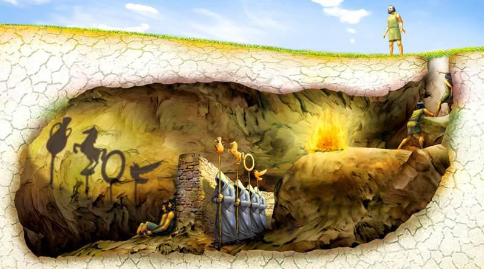

atrás da parede se tem pessoas que passam com esculturas que fazem sombras na parede onde os prisioneiros ficam olhando e assistindo as sombras.
Um prisioneiro é libertado e vê que tudo que os prisioneiros acreditavam era uma farsa, uma mentira, após voltar o prisioneiro conta aos demais o que viu mais ninguém acredita nele e julgam ele como um louco.
